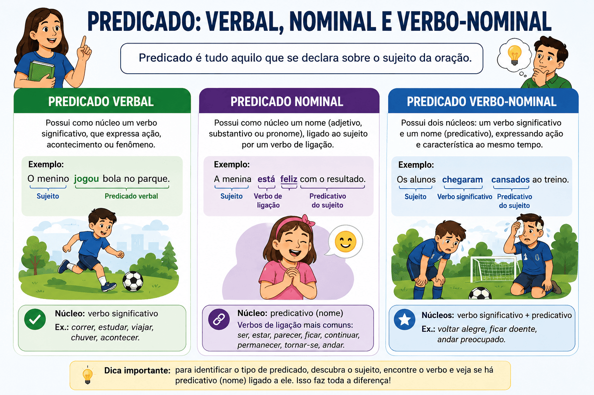

Predicado: verbal, nominal e verbo-nominal — guia completo com exemplos
O predicado é um dos principais termos da oração. Ele informa algo sobre o sujeito e sempre contém um verbo ou uma locução verbal. Compreender os tipos de predicado é essencial para interpretar textos, produzir redações melhores e resolver questões de gramática em vestibulares, concursos públicos e no PAES UEMA.

Neste guia completo, você aprenderá o que é predicado, quais são seus tipos, como identificá-los, verá diversos exemplos comentados, dicas para evitar erros e compreenderá como esse conteúdo é cobrado nas principais provas de Língua Portuguesa.
O que é predicado?
O predicado é tudo aquilo que se declara sobre o sujeito da oração. Em outras palavras, corresponde à parte da oração que apresenta uma informação sobre o sujeito e que sempre contém um verbo ou uma locução verbal.
Para compreender melhor esse conceito, também é importante conhecer os verbos da Língua Portuguesa, já que eles constituem o núcleo de toda oração.
Observe o exemplo:
Os alunos estudaram para a prova.
- Sujeito: Os alunos
- Predicado: estudaram para a prova
Todo predicado possui pelo menos um verbo, responsável por organizar a informação da oração.
Como identificar o predicado
O modo mais simples de identificar o predicado é localizar primeiro o sujeito. Tudo aquilo que resta na oração corresponde ao predicado.
Exemplo:
A professora explicou toda a matéria.
- Sujeito: A professora
- Predicado: explicou toda a matéria
Depois disso, basta observar qual é o núcleo do predicado para classificá-lo.
Predicado verbal
O predicado verbal possui como núcleo um verbo significativo, isto é, um verbo que expressa ação, acontecimento ou fenômeno.
Características
- O núcleo é um verbo.
- Expressa uma ação ou um acontecimento.
- Não apresenta predicativo do sujeito.
Exemplos
João correu rapidamente.
- Sujeito: João
- Predicado: correu rapidamente
- Núcleo: correu
As crianças brincavam no parque.
- Núcleo: brincavam
O trem chegou atrasado.
- Núcleo: chegou
Verbos frequentemente encontrados
- estudar
- escrever
- ler
- correr
- viajar
- comprar
- vender
- assistir
- andar
- construir
Predicado nominal
No predicado nominal, o núcleo é um nome, normalmente um adjetivo ou substantivo que atribui uma característica ao sujeito.
Esse tipo de predicado utiliza um verbo de ligação, cuja função é unir o sujeito ao predicativo.
Principais verbos de ligação
- ser
- estar
- parecer
- permanecer
- continuar
- ficar
- tornar-se
- andar (com sentido de estado)
Exemplos
A cidade estava tranquila.
- Verbo de ligação: estava
- Predicativo do sujeito: tranquila
- Núcleo do predicado: tranquila
Maria continua feliz.
- Núcleo: feliz
O céu ficou escuro.
- Núcleo: escuro
Estrutura
Sujeito + verbo de ligação + predicativo do sujeito
Predicado verbo-nominal
O predicado verbo-nominal reúne características dos dois tipos anteriores. Nele existe simultaneamente um verbo significativo e um predicativo, produzindo dois núcleos.
Características
- Possui um verbo significativo.
- Possui um predicativo.
- Apresenta dois núcleos: um verbo e um nome.
Exemplos
Os atletas chegaram cansados.
- Verbo: chegaram
- Predicativo: cansados
A professora encontrou os alunos animados.
- Verbo: encontrou
- Predicativo do objeto: animados
Pedro saiu preocupado.
- Verbo: saiu
- Predicativo: preocupado
Quadro comparativo
| Tipo de predicado | Núcleo | Principal característica |
|---|---|---|
| Predicado verbal | Verbo | Expressa ação ou acontecimento. |
| Predicado nominal | Nome | Expressa estado, qualidade ou característica do sujeito. |
| Predicado verbo-nominal | Verbo + nome | Expressa simultaneamente ação e característica. |
Como identificar rapidamente o tipo de predicado
Predicado verbal
Pergunte:
O verbo indica uma ação?
Se a resposta for sim, trata-se, em regra, de um predicado verbal.
Predicado nominal
Pergunte:
O verbo apenas liga o sujeito a uma característica?
Se sim, trata-se de um predicado nominal.
Predicado verbo-nominal
Pergunte:
Há uma ação e também uma característica atribuída ao sujeito ou ao objeto?
Se ambas estiverem presentes, o predicado será verbo-nominal.
Erros mais comuns
Confundir verbo de ligação com verbo significativo
João está feliz.
O verbo apenas estabelece ligação entre o sujeito e sua característica.
João está estudando.
Nesse caso, "está estudando" forma uma locução verbal que indica ação.
Achar que todo verbo "ficar" é verbo de ligação
Ela ficou triste.
Verbo de ligação.
Ela ficou em casa.
Nesse exemplo, "ficou" indica permanência em um lugar e funciona como verbo significativo.
Resumo
- O predicado é aquilo que se declara sobre o sujeito.
- Todo predicado possui um verbo.
- O predicado verbal possui núcleo verbal.
- O predicado nominal possui núcleo nominal e verbo de ligação.
- O predicado verbo-nominal apresenta dois núcleos: verbo e nome.
- A identificação correta depende da função exercida pelo verbo na oração.
Quiz — Predicado Verbal, Nominal e Verbo-Nominal (nível intermediário)
Questão 1 — O predicado é:
Questão 2 — Na oração "Os alunos estudaram para a prova.", o predicado é:
Questão 3 — O predicado verbal caracteriza-se por:
Questão 4 — A oração "Maria está feliz." apresenta:
Questão 5 — Qual verbo abaixo é normalmente empregado como verbo de ligação?
Questão 6 — Na oração "Os atletas chegaram cansados.", o predicado é classificado como:
Questão 7 — O predicado verbo-nominal possui:
Questão 8 — Em "A cidade permaneceu tranquila.", o núcleo do predicado é:
Questão 9 — Qual das orações apresenta um predicado verbal?
Questão 10 — Para identificar corretamente o tipo de predicado, o primeiro passo é:
Perguntas frequentes sobre predicado
O que é predicado?
Predicado é tudo aquilo que se declara sobre o sujeito da oração. Ele sempre contém um verbo ou uma locução verbal e pode indicar uma ação, um estado, uma característica ou uma combinação desses elementos.
Quais são os tipos de predicado?
Existem três tipos de predicado: predicado verbal, cujo núcleo é um verbo significativo; predicado nominal, cujo núcleo é um nome ligado ao sujeito por um verbo de ligação; e predicado verbo-nominal, que apresenta simultaneamente um verbo significativo e um predicativo.
Como identificar o predicado de uma oração?
Primeiro, identifique o sujeito da oração. Em seguida, tudo aquilo que se declara sobre esse sujeito corresponde ao predicado. Depois, basta analisar qual é o núcleo para determinar sua classificação.
Qual é a diferença entre predicado verbal e predicado nominal?
No predicado verbal, o núcleo é um verbo que expressa ação, acontecimento ou fenômeno. Já no predicado nominal, o núcleo é um nome (geralmente um adjetivo ou substantivo), ligado ao sujeito por meio de um verbo de ligação.
O que caracteriza o predicado verbo-nominal?
O predicado verbo-nominal reúne dois núcleos: um verbo significativo e um nome (predicativo). Assim, ele expressa ao mesmo tempo uma ação e uma característica atribuída ao sujeito ou ao objeto.
Todo predicado possui um verbo?
Sim. Todo predicado contém pelo menos um verbo ou uma locução verbal, pois é o verbo que organiza a informação principal da oração.
O que é um verbo de ligação?
O verbo de ligação não expressa uma ação, mas liga o sujeito a uma característica, estado ou condição. Entre os principais verbos de ligação estão ser, estar, parecer, ficar, continuar e permanecer.
Como o predicado é cobrado no ENEM e nos vestibulares?
As provas costumam apresentar orações para que o candidato identifique o sujeito, o predicado e sua classificação. Também são frequentes questões que exigem distinguir verbos significativos de verbos de ligação e reconhecer o predicativo do sujeito ou do objeto.
Referências
- BECHARA, Evanildo. Moderna Gramática Portuguesa. 39. ed. Rio de Janeiro: Nova Fronteira.
- CUNHA, Celso; CINTRA, Lindley. Nova Gramática do Português Contemporâneo. Rio de Janeiro: Lexikon.
- CASTILHO, Ataliba T. de. Nova Gramática do Português Brasileiro. São Paulo: Contexto.
Explore Outros Conteúdos
Continue seus estudos acessando outras seções do site Mestre Kira: